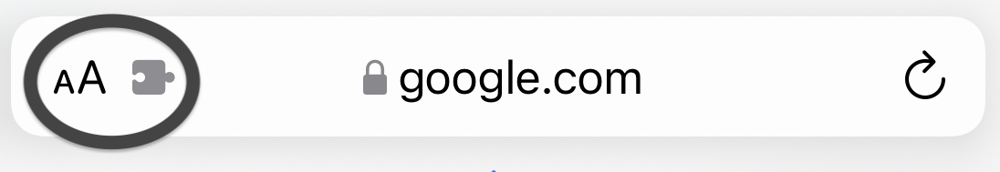
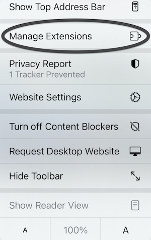
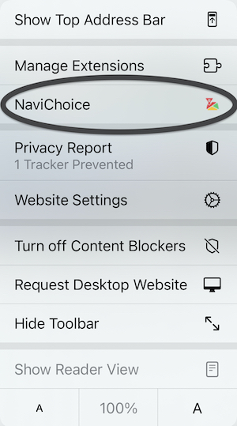

Set Up NaviChoice
Tap the button in the menu bar

Tap Manage Extensions

Toggle the switch on for NaviChoice
Tap Done
Tap NaviChoice below Manage Extensions

Select your default navigation for Google Search results